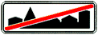

знак 5.24.2
Приложение 1 (дорожные знаки)
Закон Грузии «О дорожном движении» № 1830-რს, консолидированная редакция 25.06.2026 (Matsne, публикация 36). Юридическую силу имеет грузинский текст, русский — перевод. Источник: Matsne (рус.), Matsne (груз.).

Текст (рус., дословно)
5.24.1, 5.24.2. «Конец населенного пункта» – указывает конец населенного пункта, обозначенного соответственно знаками 5.23.1 и 5.23.2.
Официальный текст (груз.)
5.24.1, 5.24.2. „დასახლებული პუნქტის დასასრული“ − მიუთითებს შესაბამისად 5.23.1 და 5.23.2 ნიშნებით აღნიშნული დასახლებული პუნქტის დასასრულს.
Где это в курсе
Уроки
- Выпуск 4. Пешеходный переход, железнодорожный переезд, населённый пункт — разбирает, ссылается
Понятия курса
- Населённый пункт и знаки 5.23–5.26 — вводится в выпуске 4
Ссылаются в законе
Постоянная ссылка: norm/sign-5.24.2.html